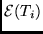

| Input files: | wfn.inp, optional |
| Output files: | wfn.out |
| Reference: | Froese Fischer C 1987 Computer Phys. Commun. 43 355 |
| Gaigalas G and Froese Fischer C 1996 | |
| Computer Phys. Commun. 98 255 | |
This program has some built-in help features. By entering H (or h)
a brief summary of possible responses is provided.
| ATOM | 1-6 character label for the calculation |
| TERM |  term value or "AV" or "av" (for average energy) |
| Z | Atomic number, real; non-integers are allowed. |
| S | screening parameter for the orbital |
| IND | 0 - use screened hydrogenic functions as initial estimates |
| 1 - leave radial function unchanged (already in memory) | |
| ACC | accelerating parameter (see HF-acc) |
| NO | maximum number of points in the range of the function ( |
| STRONG | if true, orthogonalize after each orbital update (see HF-strong. |
| Enter t for true, f for false | |
| If t(true) radial functions are printed | |
| SCFTOL | initial value of the self-consistency criterion |
| NSCF | the maximum number of SCF cycles. |
| IC | number of orbitals to be updated using the least self-consistent |
| criteria. | |
| TRACE | If t (true), detailed information about the SCF energy adjust- |
| ment process is printed |
A feature of the HF program is that the occupation
numbers need not be integer. In order to study the  transition in Be, for example, orbitals could be computed for
the configuration 2s(1.5)2p(0.5) in which case average energy
calculations will be performed for
transition in Be, for example, orbitals could be computed for
the configuration 2s(1.5)2p(0.5) in which case average energy
calculations will be performed for
Also, various expectation values may be printed at the end of
a calculation. A sample input data line is given for each case
and, ideally, the input should be aligned with the sample.
However, the format for the
input is also provided. Here it is helpful to know the
following format rules for a line of input.
| nX | skip n positions on the line (i.e. enter n blanks) |
| An | the next n positions on the line will be interpreted as characters |
| In | the next n positions on the line will be interpreted as an integer |
It should also be remembered that HF is a program for
simple cases: if there are two or more open shells, an
calculation may not be possible using HF. Configurations of
the form  generally are allowed,
generally are allowed,  ; configurations
; configurations
 ,
,  may
request information about the parent term for
may
request information about the parent term for  ; CSFs
of the form
; CSFs
of the form  are not allowed except for
are not allowed except for  ;
open
;
open  -shells may have any occupation but, any other open
shell may only be single
-shells may have any occupation but, any other open
shell may only be single  -electron. For more
complex situations NONH and MCHF should be used,
though these codes have not yet been extended to open
-electron. For more
complex situations NONH and MCHF should be used,
though these codes have not yet been extended to open
 -shells.
-shells.